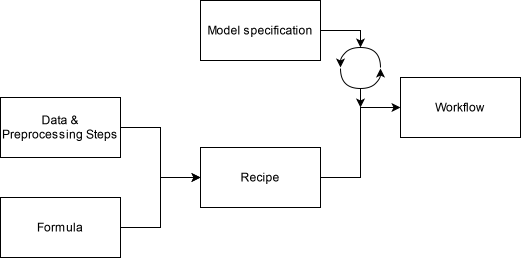
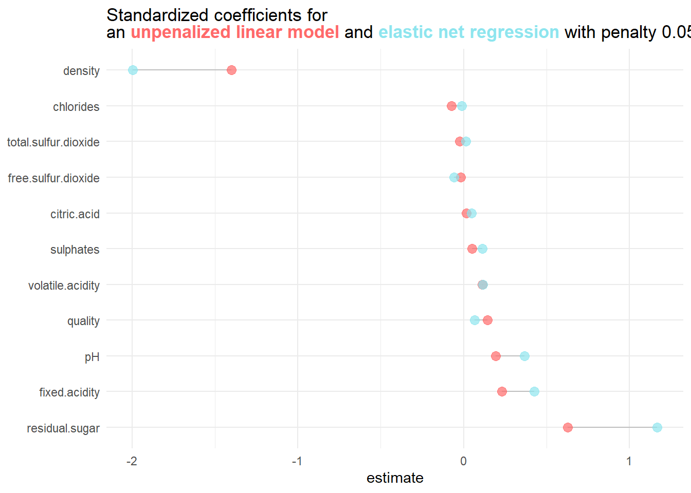

library("tidyverse")
library("tidymodels")
library("glmnet")3 Regularization
3.1 Introduction
This exercise session aims to review multiple linear regression (MLR) and different regularization techniques in theory and practice. Regularization techniques in linear regression involve a hyperparameter, namely the penalty. The models we consider in this session are ridge and lasso regression.
As for new R concepts, we will consider recipes and workflows, which are helpful for simultaneously training many different models.
A recipe aggregates steps applied to a data set before specifying a model. Therefore, recipes include the formula, i.e., the specification for the target and features, and most of the preprocessing steps we have applied manually before.
Workflows serve as a container for recipes and model specifications. They streamline the training process if there are many different models involved.
We use the same white wine data set as in Session 02 for the introduction.
3.1.1 Recipes and Workflows
We start out by importing the data set again. For detailed description of each parameter see Cortez et al.
data_wine <- read.csv("data/winequality-white.csv")
data_wine %>% glimpse()Rows: 4,898
Columns: 12
$ fixed.acidity <dbl> 7.0, 6.3, 8.1, 7.2, 7.2, 8.1, 6.2, 7.0, 6.3, 8.1,…
$ volatile.acidity <dbl> 0.27, 0.30, 0.28, 0.23, 0.23, 0.28, 0.32, 0.27, 0…
$ citric.acid <dbl> 0.36, 0.34, 0.40, 0.32, 0.32, 0.40, 0.16, 0.36, 0…
$ residual.sugar <dbl> 20.70, 1.60, 6.90, 8.50, 8.50, 6.90, 7.00, 20.70,…
$ chlorides <dbl> 0.045, 0.049, 0.050, 0.058, 0.058, 0.050, 0.045, …
$ free.sulfur.dioxide <dbl> 45, 14, 30, 47, 47, 30, 30, 45, 14, 28, 11, 17, 1…
$ total.sulfur.dioxide <dbl> 170, 132, 97, 186, 186, 97, 136, 170, 132, 129, 6…
$ density <dbl> 1.0010, 0.9940, 0.9951, 0.9956, 0.9956, 0.9951, 0…
$ pH <dbl> 3.00, 3.30, 3.26, 3.19, 3.19, 3.26, 3.18, 3.00, 3…
$ sulphates <dbl> 0.45, 0.49, 0.44, 0.40, 0.40, 0.44, 0.47, 0.45, 0…
$ alcohol <dbl> 8.8, 9.5, 10.1, 9.9, 9.9, 10.1, 9.6, 8.8, 9.5, 11…
$ quality <int> 6, 6, 6, 6, 6, 6, 6, 6, 6, 6, 5, 5, 5, 7, 5, 7, 6…Again, the goal is to estimate the alcohol contents (measured in alc/vol), but instead of using multiple linear regression, we use a penalized linear regression. First, we create a data split and cross-validation object:
set.seed(123)
split_wine <- initial_split(data_wine)
data_train_wine <- training(split_wine)
data_test_wine <- testing(split_wine)3.1.1.1 Recipes
Instead of directly specifying a linear model, we describe how we want to fit any model to the data and which preprocessing steps we want to add. Compared to the formula method inside the fit function, the recipe can perform more preprocessing steps via step_*() functions without executing them directly. Independent of the type of model we fit (or train, for that matter), we can reuse the following recipe:
In the first four lines, the recipe function specifies the formula (alcohol ~.) and template data_train_wine. The template initializes the recipe but can be changed later (e.g., when we apply these preprocessing steps to the test data). The step_normalize function in the fifth line normalizes the data passed to the recipe. Normalizing coefficients allows a comparison between features invariant of the original scale. In other words, a large absolute value of a standardized coefficient strongly influences the model.
Calling the recipe then creates a summary of the input and operations that will be performed when training a model based on this recipe:
rec_wine── Recipe ──────────────────────────────────────────────────────────────────────── Inputs Number of variables by roleoutcome: 1
predictor: 11── Operations • Centering and scaling for: all_predictors()We can also use the recipe to preprocess directly. By passing the rec_wine recipe into the prep() and bake functions, the specified steps are applied to the provided data set.1
rec_wine %>%
prep() %>%
bake(data_train_wine) %>%
glimpse()Rows: 3,673
Columns: 12
$ fixed.acidity <dbl> 1.74676532, -0.77276698, 1.02689895, -1.13270017,…
$ volatile.acidity <dbl> -0.28262884, 0.01405471, 0.01405471, 0.40963277, …
$ citric.acid <dbl> -0.02709580, 0.96236127, 2.03427309, 0.46763273, …
$ residual.sugar <dbl> -0.75671284, 0.23276240, 1.14307962, -0.59839680,…
$ chlorides <dbl> 0.326331917, -0.035460154, 0.009763855, 3.0849964…
$ free.sulfur.dioxide <dbl> -1.35630369, 0.61777490, 1.43063080, -0.65957007,…
$ total.sulfur.dioxide <dbl> -1.56230134, 1.52596077, 0.91302325, 0.04076601, …
$ density <dbl> 0.01579382, 0.57999326, 1.43797700, -0.19786750, …
$ pH <dbl> -1.96826221, 0.46863813, -0.71688096, -0.65101879…
$ sulphates <dbl> -0.093372770, -0.267595877, -0.267595877, -0.3547…
$ quality <dbl> -0.9943613, 0.1353291, -0.9943613, 0.1353291, -0.…
$ alcohol <dbl> 9.5, 9.2, 8.9, 9.2, 10.1, 10.9, 11.0, 10.2, 13.2,…Note that by applying the prep and bake functions, the new data set now contains the variable quality as an ordinal feature.
3.1.1.2 Workflows
Workflows combine model specifications and recipes. A workflow object can be defined using the workflow function. Adding a recipe is as simple as calling the function add_recipe and specifying the desired recipe. Calling the workflow object shows that a recipe is present, but a model is still missing.
wf_wine <- workflow() %>%
add_recipe(rec_wine)
wf_wine══ Workflow ════════════════════════════════════════════════════════════════════
Preprocessor: Recipe
Model: None
── Preprocessor ────────────────────────────────────────────────────────────────
1 Recipe Step
• step_normalize()Specifying an MLR model and adding it to the workflow is achieved by calling the add_model function:
lm_spec<- linear_reg()
wf_wine <- wf_wine %>%
add_model(lm_spec)We can then finally train the model using the fit function again:
lm_fit_res <- wf_wine %>%
fit(data_train_wine)The whole process can be visualized as follows:

The circling arrows symbolize that the model specification can be swapped, meaning that we can simply specify a different model and replace it in the workflow.
3.1.2 Tuning a ridge regression model
3.1.2.1 Training a ridge regression model
A ridge model can be specified with the linear_reg function.
lm_ridge_spec <- linear_reg(
penalty = 0.05,
mixture = 0
) %>%
set_engine("glmnet")Here, the penalty argument corresponds to the hyperparameter \(\lambda\) in the loss function of ridge regression:
\[\begin{equation} \mathcal{L}_{\mathrm{ridge}}(\beta,\lambda) = \sum_{n=1}^{N} (y_n - \hat{y}_n)^2 + \lambda \sum_{i=0}^{k} \beta_i^2 \end{equation}\]
Setting mixture = 0 indicates the model is a ridge regression, while mixture=1 corresponds to lasso regression. Any value between \(\alpha\in(0,1)\) corresponds to an elastic net with ridge proportion \(\alpha\) and lasso proportion \(1-\alpha\).
Using the set_engine("glmnet") command, we specify that the ridge regression is performed using the {glmnet} package. Besides the {glmnet} library, there are around 13 other packages for fitting linear models. However, it is far from the scope of this manuscript to discuss every other library in detail.
To fit the ridge regression model, swap the model specification lm_spec with the model specification of the ridge regression lm_ridge_spec in the workflow using update_model and pass the output to the fit function.
lm_ridge_fit_res <- wf_wine %>%
update_model(lm_ridge_spec) %>%
fit(data_train_wine)The estimated coefficients can then be viewed using the tidy() function:
lm_ridge_fit_res %>%
tidy()# A tibble: 12 × 3
term estimate penalty
<chr> <dbl> <dbl>
1 (Intercept) 10.5 0.05
2 fixed.acidity 0.199 0.05
3 volatile.acidity 0.162 0.05
4 citric.acid 0.0532 0.05
5 residual.sugar 0.462 0.05
6 chlorides -0.127 0.05
7 free.sulfur.dioxide -0.0181 0.05
8 total.sulfur.dioxide -0.0922 0.05
9 density -1.15 0.05
10 pH 0.185 0.05
11 sulphates 0.0613 0.05
12 quality 0.202 0.05Comparing the model coefficients of the penalized model with the unpenalized model yields:

3.1.2.2 Determining an optimal value for \(\lambda\)
The penalty value 0.05 was chosen arbitrarily. Depending on the penalty value, the performance of the penalized model might increase or decrease. It is, therefore, essential to find an optimal penalty value!
Hyperparameter tuning aims to streamline this approach. Instead of randomly choosing a penalty value, we can search for an optimal one by trying out a range of different penalties and choosing the optimal one within this range. Usually, one deploys an equidistant grid of candidate values. For example, if the penalty can take any value in the interval \([0,1]\), then try \(\lambda \in \{0,\frac{1}{n},\frac{2}{n},...,\frac{n}{n}\}\), where \(n \in \mathbb{N}\). However, this approach comes with challenges as well. Consider the following hypothetical example where an equidistant grid with \(n=8\) is chosen.

The chosen grid (blue dots) does not cover the optimal penalty value (green dot). A solution could be increasing the grid size. However, more complex models require more computing time, so testing many different grid values eventually becomes unfeasible
It is, therefore, important to balance grid size and compute time to obtain satisfactory results.
3.1.2.3 Tuning for an optimal penalty value
When computational resources are available, it is encouraged to perform hyperparameter tuning via cross-validation instead of a single train/validation/test split.
folds_wine <- vfold_cv(data_train_wine,10)Using the {tidymodels} framework makes hyperparameter tuning fairly uncomplicated, even when using cross-validation. By setting a hyperparameter in the model specification to tune(), we indicate that this parameter should later be tuned.
For the specific example of ridge regression, this can be achieved by the following code snippet:
lm_ridge_spec_tune <- linear_reg(
penalty = tune(),
mixture = 0
) %>%
set_engine("glmnet")By updating the workflow and subsequently training the model for different hyperparameters on each split using the tune_grid function, we obtain the results of hyperparameter tuning.
lm_ridge_tune_fit_res <- wf_wine %>%
update_model(lm_ridge_spec_tune) %>%
tune_grid(
resamples = folds_wine,
grid = 20
)Setting grid = 20 automatically generates \(20\) different candidate hyperparameters. If we want to set a grid manually, we have to specify the parameters and values to be tuned explicitly:
In line 8 of the snippet above, the metrics argument is passed. By setting metrics = metric_set(mae), we specify that the metric for evaluating the model is the mean absolute error.
Calling the results of model tuning returns a nested data frame consisting of \(10\) rows and \(4\) columns. Each row contains information information like the metric about the underlying split for each tested hyperparameter.
lm_ridge_tune_fit_res# Tuning results
# 10-fold cross-validation
# A tibble: 10 × 4
splits id .metrics .notes
<list> <chr> <list> <list>
1 <split [3305/368]> Fold01 <tibble [100 × 5]> <tibble [0 × 3]>
2 <split [3305/368]> Fold02 <tibble [100 × 5]> <tibble [0 × 3]>
3 <split [3305/368]> Fold03 <tibble [100 × 5]> <tibble [0 × 3]>
4 <split [3306/367]> Fold04 <tibble [100 × 5]> <tibble [0 × 3]>
5 <split [3306/367]> Fold05 <tibble [100 × 5]> <tibble [0 × 3]>
6 <split [3306/367]> Fold06 <tibble [100 × 5]> <tibble [0 × 3]>
7 <split [3306/367]> Fold07 <tibble [100 × 5]> <tibble [0 × 3]>
8 <split [3306/367]> Fold08 <tibble [100 × 5]> <tibble [0 × 3]>
9 <split [3306/367]> Fold09 <tibble [100 × 5]> <tibble [0 × 3]>
10 <split [3306/367]> Fold10 <tibble [100 × 5]> <tibble [0 × 3]>By using the autoplot function we can visualize some finding right away:
lm_ridge_tune_fit_res %>% autoplot()
Considering the figure above, the cross-validation MAE (CV-MAE) is not reduced when the model parameters are penalized. For \(\lambda \in [0,0.1)\) the CV-MAE is influenced at all. Even worse, the CV-MAE seems to increase for any \(\lambda \geq 0.1\)!
This is an example where penalizing model parameters is not beneficial. However, if we wish to extract the optimal hyperparameter value, we can proceed as follows:
(penalty_opt <- select_best(lm_ridge_tune_fit_res,
metric = "mae")
)# A tibble: 1 × 2
penalty .config
<dbl> <chr>
1 0 Preprocessor1_Model001Unsurprisingly, the optimal penalty is \(\lambda = 0\).
We can also choose \(\lambda\) according to the “one-standard error” rule:
(penalty_opt_osr <- select_by_one_std_err(lm_ridge_tune_fit_res,
metric = "mae",
desc(penalty))
)# A tibble: 1 × 2
penalty .config
<dbl> <chr>
1 0.0909 Preprocessor1_Model010The optimal penalty according to the “one-standard error” rule, which selects the most simple model within one standard error of the numerically optimal results, is different from \(0\).
Pro Tip
You can use the pull function in a similar fashion as $ to extract a single vector:
(penalty_opt <- penalty_opt %>%
pull(penalty)
)[1] 0(penalty_opt_osr <- penalty_opt_osr %>%
pull(penalty)
)[1] 0.090909093.1.2.4 Training a final model with the best hyperparameter value
After determining the best hyperparameter, a final model can be trained on the whole training data and evaluated on the testing data.
First, specify a final model specification with the determined hyperparameter.
lm_ridge_spec_final <- linear_reg(penalty = penalty_opt,
mixture = 0.0) %>%
set_engine("glmnet")Use the last_fit function to fit the final model to the entire training data. This function automatically fits the model to the training data and evaluates it on the test data with the provided metrics.
lm_ridge_spec_final_fit <- wf_wine %>%
update_model(lm_ridge_spec_final) %>%
last_fit(split_wine,
metrics = metric_set(mae))The metrics can then be extracted using the collect_metrics function.
lm_ridge_spec_final_fit %>%
collect_metrics()# A tibble: 1 × 4
.metric .estimator .estimate .config
<chr> <chr> <dbl> <chr>
1 mae standard 0.418 Preprocessor1_Model1A visualization of the steps for effectively tuning the penalty value in a ridge regression setting can be found below.

3.2 Exercises
3.2.1 Theoretical Exercises
Exercise 3.1 The goal of this initial exercise is to review some theoretical aspects of OLS, ridge, and lasso regression.
In Statistics I/II, we learned that OLS is the cornerstone of linear regression analysis. It allows us to explore and quantify the relationship between the response variable and the regressors in a relatively simple but meaningful way. We can extend the idea of a simple linear regression by adding a penalty term to the loss function we want to minimize. This process is called regularization and has been introduced in the lecture regarding ridge and lasso regression.
Consider a simple linear model with a quantitative response variable \(Y\) and a single predictor \(X\). The simple linear model then assumes (among other things) that there is approximately a linear relationship between \(Y\) and \(X\), i.e.,
\[ Y \approx \beta_0 + \beta_1 X. \]
with unknown coefficients \(\beta_0,\beta_1\). To obtain the best estimate \(\beta_0\) and \(\beta_1\) for a given sample we can minimize the MSE
\[ \begin{equation} \min_{\beta_0,\beta_1} MSE = \frac{1}{N}\sum_{n=1}^{N} (y_n - (\beta_0 + \beta_1 x_n))^2 \end{equation} \]
where \(N = \mathrm{length(Y)}\), \(y_1,…,y_N\) is a realized sample of \(Y\), and \(x_1,…,x_N\) is a realized sample of \(X\).
Show, that
\[ \begin{align*} \hat \beta_1 &= \frac{\sum_{n=1}^N (x_n - \bar x)(y_n-\bar y)}{\sum_{n=1}^{N}(x_n-\bar x)^2}\\ \hat\beta_0 &= \bar y - \hat\beta_1\bar x. \end{align*} \]
with \(\bar x = \frac{1}{N}\sum_{n=1}^{N}x_n\) and \(\bar y = \frac{1}{N}\sum_{n=1}^{N}y_n\) minimizes the minimization problem above. You can assume that the critical points calculated using the partial derivatives are in fact minima and that \(\sum_{n=1}^{N}(x_n-\bar x)^2\neq 0\).
Exercise 3.2 Explain the meaning of the following meme in relation to ridge regression and OLS regression:

Exercise 3.3 Consider the following statements and decide whether ridge or lasso regression should be applied.
You are building a predictive model for stock price prediction, and you have a large number of potential predictors. Some of these predictors might be highly correlated with each other.
You are modeling housing prices, and you want to prevent the model from overfitting to the training data.
You are working on a marketing project where you have a dataset with a mix of numerical and categorical features. You need to build a regression model to predict customer lifetime value.
Exercise 3.4 Come up with a scenario where a mixed model, i.e. an elastic net might be a good choice.
3.2.2 Programming Exercises
In the following exercises, we will revisit the ImmoScout data set Apartment rental offers in Germany, but instead of considering rent prices in Augsburg, we will now consider rent prices in Munich. The data set can be downloaded using the button below.
It contains 4383 unique rental listings for flats in Munich, sourced on three dates in 2018 and 2019, and 28 different variables. We will briefly prepare the data set, create a recipe, and create a workflow before training and tuning different models.
Exercise 3.5 Import the data set and apply the following steps to the data:
Remove the following columns from the data set
c("serviceCharge","heatingType","picturecount","totalRent", "firingTypes","typeOfFlat","noRoomsRange", "petsAllowed", "livingSpaceRange","regio3","heatingCosts", "floor", "date", "pricetrend")Remove all the
NAvalues.Next, mutate the data as follows:
Convert the feature
interiorQualto an ordered factor variable using the following levels:c("simple", "normal", "sophisticated", "luxury")Convert the feature
conditionto an ordered factor variable using the following levels:c("need_of_renovation", "negotiable","well_kept","refurbished", "first_time_use_after_refurbishment", "modernized", "fully_renovated", "mint_condition", "first_time_use")Convert the feature
geo_plzto an unordered factor.Convert every logical feature into a numerical feature such that
TRUEcorresponds to1andFALSEto0.Remove any flat that costs more than 4000 EUR or is bigger than 200 \(m^2\) from the data set.
Exercise 3.6 Use the seed 24 and create a training and test split with \(80\%\) training data based on the newly mutated data set. Then, with the same seed, create a \(5\)-fold cross-validation data set from the training data.
Exercise 3.7 Explain the following recipe by describing each function.
rec_rent <- recipe(
formula = baseRent ~.,
data = data_train
) %>%
update_role(scoutId, new_role = "ID") %>%
step_ordinalscore(interiorQual, condition)%>%
step_dummy(geo_plz)%>%
step_zv(all_predictors())Exercise 3.8 In the previous exercises, we initially mutated the data set (cf. Exercise 3.5) before adding mutations using the recipe function. This procedure can add unnecessary complexity or confusion since the preprocessing steps are spread across the markdown document.
Therefore, modify the code of Exercises Exercise 3.6 and Exercise 3.7 so that the preprocessing steps of Exercise 3.5 are included in the recipe.
Hint: You can use the step_select, step_mutate, step_naomit, step_novel, and step_dummy functions for incorporating the preprocessing steps.
Exercise 3.9 Create a lasso model with penalty set to tune. Then, use the following penalty values for tuning the lasso model. Finally, create a new workflow object to add the model specification and recipe.
penalty_vals <- tibble(penalty = seq(0, 20, length.out = 500))Exercise 3.10 Train the lasso model using cross-validation across all penalty values. Then, evaluate the results by finding the optimal penalty value and the optimal penalty value according to the one standard error rule with respect to the metric MAE.
Exercise 3.11 Consider the following plot, which depicts the mean out-of-sample RMSE for different penalty values. The dashed lines represent the optimal penalty and the largest penalty value, such that the mean MSE is within one standard error of the optimum.
Decide and present an argument for which line is the optimal penalty. Furthermore, explain why we would choose the non-optimal penalty in lasso regression.
Exercise 3.12 Given the optimal penalty, train the Train a lasso model with the optimal penalty value on the whole training data and find out which parameters are set to \(0\). Then, evaluate the model on the test data by calculating the out of sample MAE and \(R^2\).
3.3 Solutions
Solution 3.1 (Exercise 3.1). First, calculate the partial derivatives of
\[ L(\beta_0,\beta_1) = \frac{1}{N}\sum_{n=1}^{N} (y_n - (\beta_0 + \beta_1 x_n))^2 \tag{3.1}\]
with respect to \(\beta_1\) and \(\beta_0\).
\[ \begin{align*} \frac{\partial}{\partial \beta_0} L(\beta_0,\beta_1) &= \frac{1}{N}\sum_{n=1}^{N} -2(y_n-(\beta_0 + \beta_1x_n))\\ &= -2\bar y + 2\beta_0 +2\beta_1 \bar x \\ &\overset{!}{=}0 \\ \frac{\partial}{\partial \beta_1} L(\beta_0,\beta_1) &= \frac{1}{N}\sum_{n=1}^{N} -x_n(2(y_n-(\beta_0+\beta_1x_n))) \\ &= -2\overline{xy} + 2\frac{1}{N}\sum_{n=1}^{N} x_n\beta_0+\beta_1x_n^2\\ &= -2\overline{xy} + 2\beta_0 \bar x + 2\beta_1 \overline{x^2}\\ &\overset{!}{=}0 \end{align*} \]
Solving the first term for \(\beta_0\) yields
\[ \beta_0 = \bar y - \beta_1\bar x. \]
In order to solve the second term for \(\beta_1\) we can utilize this newly acquired representation of \(\beta_0\):
\[ \begin{align*} -2\overline{xy} + 2\beta_0 \bar x + 2\beta_1 \overline{x^2} = -2\overline{xy} + 2(\bar y - \beta_1\bar x) \bar x + 2\beta_1 \overline{x^2} \overset{!}{=}0. \end{align*} \]
Then,
\[ \begin{align*} -2\overline{xy} + 2(\bar y - \beta_1\bar x) \bar x + 2\beta_1 \overline{x^2} &= -2\overline{xy} + 2\bar y \bar x- 2\beta_1\bar x^2+ 2\beta_1 \overline{x^2}\\ &\overset{!}{=} 0. \end{align*} \]
This can easily be solved for \(\beta_1\), which yields
\[ \beta_1 = \frac{\sum_{n=1}^N (x_n - \bar x)(y_n-\bar y)}{\sum_{n=1}^{N}(x_n-\bar x)^2}. \]
Note, that
\[ \begin{align*} \sum_{n=1}^N (x_n - \bar x)(y_n-\bar y) &= \sum_{n=1}^N x_n y_n -\bar xy_n-x_n\bar y + \bar x \bar y\\ &= N(\overline{xy} - \bar x\bar y - \bar x \bar y + \bar x \bar y)\\ &= N(\overline{xy}-\bar x\bar y) \end{align*} \]
and
\[ \begin{align*} \sum_{n=1}^{N}(x_n-\bar x)^2 &= \sum_{n=1}^{N}x_n^2 - 2x_n\bar x + \bar x^2\\ &= N(\overline{x^2} - 2\bar x ^2 + \bar x^2)\\ &= N(\overline{x^2} - \bar x ^2) \end{align*} \]
Solution 3.2 (Exercise 3.2). The key point addresses the bias-variance trade-off.
From the lecture, we know that
\[ \hat \beta_{\mathrm{ridge}}(\lambda) = \frac{\hat\beta_{\mathrm{OLS}}}{1+\lambda} \]
if the features are standardized and orthogonal.
- Bias:
By growing the parameter \(\lambda\), the parameter \(\hat\beta_{\mathrm{OLS}}\) shrinks. In other words, the regularization term encourages the model to have smaller coefficient values, which means it may not fit the training data as closely as an unregularized model. This means that systematic errors are introduced to the model’s predictions. - Variance:
By growing the parameter \(\lambda\), we reduce variance by shrinking the coefficients’ values, which discourages them from taking very high values. This effectively constrains the model’s complexity and makes it less prone to overfitting.
Solution 3.3 (Exercise 3.3).
Lasso regression should be used in this scenario because it can perform feature selection by driving some coefficients to zero. This is especially helpful if there are many features as it helps in dealing with correlated predictors.
Ridge regression is more suitable because it provides a smoother and more continuous shrinkage of coefficients, which reduces the risk of overfitting.
Lasso regression might be a more suitable choice as it can perform feature selection and even drive the coefficient for some categorical values to 0.
Solution 3.4 (Exercise 3.4). A healthcare dataset is given to predict a patient’s readmission probability with numerous correlated features. The aim is to build a model that predicts accurately, selects the most relevant features, and mitigates multicollinearity. Here, an elastic net is the preferred choice because it combines Ridge and Lasso regression, effectively handling multicollinearity while performing feature selection, making it ideal for this complex healthcare dataset.
Solution 3.5 (Exercise 3.5).
data_muc_filtered <- data_muc %>%
select(!c("serviceCharge","heatingType","picturecount","totalRent",
"firingTypes","typeOfFlat","noRoomsRange", "petsAllowed",
"livingSpaceRange","regio3","heatingCosts", "floor",
"date", "pricetrend")) %>%
na.omit %>%
mutate(
interiorQual = factor(
interiorQual,
levels = c("simple", "normal", "sophisticated", "luxury"),
ordered = TRUE
),
condition = factor(
condition,
levels = c("need_of_renovation", "negotiable","well_kept","refurbished",
"first_time_use_after_refurbishment",
"modernized", "fully_renovated", "mint_condition",
"first_time_use"),
ordered = TRUE
),
geo_plz = factor(geo_plz)
) %>%
filter(baseRent <= 4000, livingSpace <= 200)Solution 3.6 (Exercise 3.6).
set.seed(24)
split <- initial_split(data_muc_filtered, 0.8)
data_train <- training(split)
data_test <- testing(split)
folds <- vfold_cv(data_train, v = 5)Solution 3.7 (Exercise 3.7).
We first set up the recipe by specifying the formula and data used in each step. Note, that by using the expression
baseRent ~.we indicate that we want to fit every variable in thedata_traindataset on the dependent variablebaseRent.The
update_rolefunction assigns the featurescoutIdto a new role calledID. By doing so, the featurescoutIdis no longer used as a predictor and will no longer influence our model. We will still keep it in the loop, however in case we want to access a specific listing that is only accessible using the uniquescoutId.We then convert the factors
interiorQualandconditionto ordinal scores by using thestep_ordinalscorefunction. The translation uses a linear scale, i.e. for the featureinteriorQualthe levelsimplecorresponds to the value0andluxurycorresponds to the value4.Afterward, we create dummy variables for each zip code. Here, every zip code in the
data_trainis treated as a new variable. Thus, we are basically replacing the featuregeo_plzwith 82 new features, each representing one of the 82 zip codes available in the training data.The
step_zv(zero variance filter) function removes all variables that contain only a single value. If, for example, a zip code does not occur in any of the entries ofdata_train, the whole column will be set to zero and effectively not affect our model. Thus it is in our best interest to remove those columns.
Solution 3.8 (Exercise 3.8). Creating a new data split based on the unmutated data.
set.seed(24)
split <- initial_split(data_muc, 0.8)
data_train <- training(split)
data_test <- testing(split)
folds <- vfold_cv(data_train, v = 5)Inserting the previous preprocessing steps into the recipe framework. Note, that this only requires changing:
selecttostep_select,na.omittostep_naomit,mutatetostep_mutate, andfiltertostep_filter.
rec_rent <- recipe(
formula = baseRent ~.,
data = data_train
) %>%
update_role(scoutId, new_role = "ID") %>%
step_select(!c("serviceCharge","heatingType","picturecount","totalRent",
"firingTypes","typeOfFlat","noRoomsRange", "petsAllowed",
"livingSpaceRange","regio3","heatingCosts", "floor",
"date", "pricetrend")) %>%
step_naomit(all_predictors()) %>%
step_mutate(
interiorQual = factor(
interiorQual,
levels = c("simple", "normal", "sophisticated", "luxury"),
ordered = TRUE
),
condition = factor(
condition,
levels = c("need_of_renovation", "negotiable","well_kept","refurbished",
"first_time_use_after_refurbishment",
"modernized", "fully_renovated", "mint_condition",
"first_time_use"),
ordered = TRUE
),
geo_plz = factor(geo_plz),
across(where(is.logical),as.numeric)
) %>%
step_filter(baseRent <= 4000, livingSpace <= 200) %>%
step_ordinalscore(interiorQual, condition)%>%
step_novel(geo_plz)%>%
step_dummy(geo_plz)%>%
step_zv(all_predictors())Solution 3.9 (Exercise 3.9).
model_lasso <- linear_reg(penalty = tune(), mixture = 1.0) %>%
set_engine(engine = "glmnet", path_values = penalty_vals$penalty )
wf_rent <- workflow() %>%
add_recipe(rec_rent) %>%
add_model(model_lasso)Solution 3.10 (Exercise 3.10).
lasso_tune_res <-
wf_rent %>%
tune_grid(
grid = penalty_vals,
metrics = multi_metric,
resamples = folds
)
tib <- lasso_tune_res %>% collect_metrics %>%
pivot_wider(
names_from = .metric,
values_from = c(mean, std_err)
)
penalty_one_std <- select_by_one_std_err(
lasso_tune_res,
metric = "mae",
desc(penalty)
) %>%
pull(penalty)
penalty_opt <- select_best(lasso_tune_res, metric = "mae") %>% pull(penalty)
glue::glue("The optimal penalty is {round(penalty_opt,2)} and \n the optimal penalty according to the one standard error rule is {round(penalty_one_std,2)}.")The optimal penalty is 0 and
the optimal penalty according to the one standard error rule is 20.Solution 3.11 (Exercise 3.11). The red line depicts the optimal penalty, since it intersects the minimum of the RMSE. Especially in Lasso regression an optimal penalty parameter is often smaller than we desire. The effect of a smaller penalty parameter is, that we do not eliminate as many features as we anticipated. By increasing the penalty we can effectively overcome this problem as more features are eliminated. A disadvantage however is, that we sacrefice out-of-sample performance, as the newly chosen penalty is not optimal anymore.
Solution 3.12 (Exercise 3.12).
glm_res_best<- lasso_tune_res %>%
select_by_one_std_err(metric = "mae", desc(penalty))
best_penalty <- glm_res_best$penalty
last_glm_model <- linear_reg(penalty = best_penalty, mixture = 1.0) %>%
set_engine("glmnet")
wf_rent_final <- wf_rent %>%
update_model(last_glm_model)
last_glm_fit <-
wf_rent_final %>%
last_fit(split,
metrics = multi_metric)
last_glm_fit %>%
collect_metrics()# A tibble: 2 × 4
.metric .estimator .estimate .config
<chr> <chr> <dbl> <chr>
1 rsq standard 0.824 Preprocessor1_Model1
2 mae standard 254. Preprocessor1_Model13.4 Session Info
sessionInfo()R version 4.2.3 (2023-03-15 ucrt)
Platform: x86_64-w64-mingw32/x64 (64-bit)
Running under: Windows 10 x64 (build 22631)
Matrix products: default
locale:
[1] LC_COLLATE=German_Germany.utf8 LC_CTYPE=German_Germany.utf8
[3] LC_MONETARY=German_Germany.utf8 LC_NUMERIC=C
[5] LC_TIME=German_Germany.utf8
attached base packages:
[1] stats graphics grDevices utils datasets methods base
other attached packages:
[1] ggtext_0.1.2 glmnet_4.1-8 Matrix_1.6-0 yardstick_1.3.1
[5] workflowsets_1.1.0 workflows_1.1.4 tune_1.2.1 rsample_1.2.1
[9] recipes_1.1.0 parsnip_1.2.1 modeldata_1.4.0 infer_1.0.7
[13] dials_1.3.0 scales_1.3.0 broom_1.0.7 tidymodels_1.2.0
[17] lubridate_1.9.3 forcats_1.0.0 stringr_1.5.1 dplyr_1.1.4
[21] purrr_1.0.2 readr_2.1.5 tidyr_1.3.1 tibble_3.2.1
[25] ggplot2_3.5.1 tidyverse_2.0.0
loaded via a namespace (and not attached):
[1] DiceDesign_1.10 tools_4.2.3 backports_1.4.1
[4] utf8_1.2.3 R6_2.5.1 rpart_4.1.23
[7] colorspace_2.1-0 nnet_7.3-19 withr_3.0.1
[10] tidyselect_1.2.1 compiler_4.2.3 cli_3.6.2
[13] xml2_1.3.6 labeling_0.4.3 commonmark_1.9.1
[16] digest_0.6.35 rmarkdown_2.28 pkgconfig_2.0.3
[19] htmltools_0.5.8.1 parallelly_1.37.1 lhs_1.1.6
[22] fastmap_1.1.1 htmlwidgets_1.6.4 rlang_1.1.3
[25] rstudioapi_0.17.0 farver_2.1.1 shape_1.4.6.1
[28] generics_0.1.3 jsonlite_1.8.8 magrittr_2.0.3
[31] Rcpp_1.0.12 munsell_0.5.1 fansi_1.0.4
[34] GPfit_1.0-8 lifecycle_1.0.4 furrr_0.3.1
[37] stringi_1.8.3 yaml_2.3.8 MASS_7.3-58.2
[40] grid_4.2.3 parallel_4.2.3 listenv_0.9.1
[43] crayon_1.5.3 lattice_0.22-6 splines_4.2.3
[46] gridtext_0.1.5 hms_1.1.3 knitr_1.43
[49] pillar_1.9.0 markdown_1.13 future.apply_1.11.2
[52] codetools_0.2-20 glue_1.6.2 evaluate_1.0.1
[55] data.table_1.15.4 vctrs_0.6.5 tzdb_0.4.0
[58] foreach_1.5.2 gtable_0.3.5 future_1.33.0
[61] xfun_0.43 gower_1.0.1 prodlim_2023.08.28
[64] class_7.3-22 survival_3.6-4 timeDate_4041.110
[67] iterators_1.0.14 hardhat_1.4.0 lava_1.8.0
[70] timechange_0.3.0 globals_0.16.3 ipred_0.9-14 The function names
prepandbakeare references to literal baking recipes: You start out by specifying the ingredients for something you want to bake. Then you prepare the ingredients before finally baking the prepped ingredients.↩︎